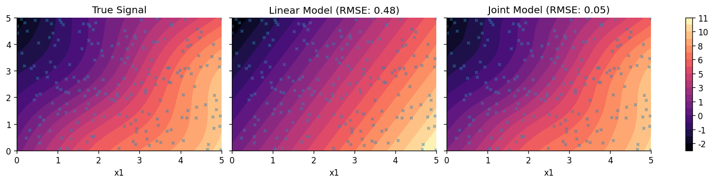

Spatial Modelling with Composable Gaussian Processes
This notebook shows how to construct a semiparametric linear model by composing a linear model in NumPyro with a GPJax Gaussian Process (GP). We build two components: firstly, the linear component which ncodes a global affine trend with Bayesian linear regression. We then define a GP residual component which is responsible for capturing spatial structure that the linear term's residual.
The example highlights the interplay between GPJax and NumPyro: GPJax provides the GP
prior and likelihood definitions, while NumPyro performs Hamiltonian Monte Carlo (HMC)
inference across all parameters in a unified model and allows us to draw upon a broader set of
modelling components.
Data Simulation
We simulate a 2D spatial dataset (\(N=200\)) on a domain \([0, 5] \times [0, 5]\). The generative process contains a linear trend: \(y_{\text{lin}} = 2x_1 - 1x_2 + 1.5\) with an additive spatial residual: \(y_{\text{res}} = \sin(x_1) \cos(x_2)\). To this, we add simulate an additive homoscedastic noise component \(\epsilon \sim \mathcal{N}(0, 0.1^2)\). The dominant linear trend masks a non-linear residual. Composing models lets us represent both behaviours without forcing a single mechanism to fit every feature of the data.
from functools import partial
import jax
import jax.numpy as jnp
import jax.random as jr
import matplotlib as mpl
import matplotlib.pyplot as plt
import numpyro
import numpyro.distributions as dist
from numpyro.infer import (
MCMC,
NUTS,
Predictive,
)
from examples.utils import use_mpl_style
import gpjax as gpx
from gpjax.numpyro_extras import register_parameters
jax.config.update("jax_enable_x64", True)
use_mpl_style()
cols = mpl.rcParams["axes.prop_cycle"].by_key()["color"]
N = 200
key = jr.key(123)
keys = jr.split(key, 8)
X = jr.uniform(keys[0], shape=(N, 2), minval=0.0, maxval=5.0)
# True Linear Trend
true_slope = jnp.array([2.0, -1.0])
true_intercept = 1.5
y_lin = X @ true_slope + true_intercept
# Non-linear Spatial Residual
y_res = jnp.sin(X[:, 0]) * jnp.cos(X[:, 1])
# Total Signal + Noise
latent_signal = y_lin + y_res
noise_stddev = 0.1
y = latent_signal + noise_stddev * jr.normal(keys[1], shape=latent_signal.shape)
Linear Component
We begin by defining a Bayesian linear regression model in NumPyro. This component will later be combined with a GP residual, but for now, we'll establish a baseline model through ordinary linear regression.
We use the No-U-Turn Sampler (NUTS) to draw samples from the posterior distributions of the slope \(\mathbf{w}\), intercept \(b\), and noise \(\sigma\).
def linear_model(X, Y=None):
slope = numpyro.sample("slope", dist.Normal(0.0, 5.0).expand([2]))
intercept = numpyro.sample("intercept", dist.Normal(0.0, 5.0))
obs_noise = numpyro.sample("obs_noise", dist.LogNormal(0.0, 1.0))
mu = X @ slope + intercept
numpyro.deterministic("mu", mu)
numpyro.sample("obs", dist.Normal(mu, obs_noise), obs=Y)
nuts_kernel_lin = NUTS(linear_model)
mcmc_lin = MCMC(nuts_kernel_lin, num_warmup=1500, num_samples=2000, num_chains=1)
mcmc_lin.run(keys[2], X, y)
mcmc_lin.print_summary()
mean std median 5.0% 95.0% n_eff r_hat
intercept 1.36 0.10 1.36 1.20 1.52 915.80 1.00
obs_noise 0.50 0.03 0.49 0.45 0.53 1272.61 1.00
slope[0] 2.07 0.03 2.07 2.03 2.11 1235.28 1.00
slope[1] -1.03 0.03 -1.03 -1.07 -0.99 1129.96 1.00
Number of divergences: 0
Composing the Linear Component with a GP
We now augment the linear component with a GP tasked with modelling the residual.
GPJax and NumPyro Integration
We define the GP prior in GPJax using an second-order Matérn kernel and a constant mean function
(since the linear trend is handled explicitly). We attach dist.LogNormal priors to
the kernel's hyperparameters (lengthscale and variance) directly within the GPJax object.
We then register the parameters by calling
gpx.numpyro_extras.register_parameters(gp_posterior) inside the NumPyro model. This
function traverses the GPJax object, identifies parameters with attached priors, and
registers them as NumPyro sample sites. It returns a new GPJax object where the parameters
have been replaced by the values sampled by NumPyro. Finally, we compute the exact marginal
log-likelihood (MLL) of the residuals under the GP prior using gpx.objectives.conjugate_mll.
This term is added to the potential function using numpyro.factor, guiding the sampler.
lengthscale = gpx.parameters.PositiveReal(1.0, prior=dist.LogNormal(0.0, 1.0))
variance = gpx.parameters.PositiveReal(1.0, prior=dist.LogNormal(0.0, 1.0))
kernel = gpx.kernels.Matern32(
active_dims=[0, 1], lengthscale=lengthscale, variance=variance
)
meanf = gpx.mean_functions.Constant()
prior = gpx.gps.Prior(mean_function=meanf, kernel=kernel)
obs_stddev = gpx.parameters.NonNegativeReal(0.1, prior=dist.LogNormal(0.0, 1.0))
likelihood = gpx.likelihoods.Gaussian(num_datapoints=N, obs_stddev=obs_stddev)
gp_posterior = prior * likelihood
def joint_model(X, Y, gp_posterior, X_new=None):
slope = numpyro.sample("slope", dist.Normal(0.0, 5.0).expand([2]))
intercept = numpyro.sample("intercept", dist.Normal(0.0, 5.0))
trend = X @ slope + intercept
p_posterior = register_parameters(gp_posterior)
if Y is not None:
residuals = Y - trend
residuals = residuals.reshape(-1, 1)
D_resid = gpx.Dataset(X=X, y=residuals)
mll = gpx.objectives.conjugate_mll(p_posterior, D_resid)
numpyro.factor("gp_log_lik", mll)
if X_new is not None:
if Y is not None:
residuals = Y - trend
residuals = residuals.reshape(-1, 1)
D_resid = gpx.Dataset(X=X, y=residuals)
latent_dist = p_posterior.predict(X_new, train_data=D_resid)
f_new = numpyro.sample("f_new", latent_dist)
f_new = f_new.reshape((-1, 1))
total_prediction = (X_new @ slope + intercept).reshape(-1, 1) + f_new
numpyro.deterministic("y_pred", total_prediction)
joint_model_wrapper = partial(joint_model, gp_posterior=gp_posterior)
nuts_kernel_joint = NUTS(joint_model_wrapper)
# In practice, one should run more samples from multiple chains.
mcmc_joint = MCMC(nuts_kernel_joint, num_warmup=1500, num_samples=2000, num_chains=1)
mcmc_joint.run(keys[3], X, y)
mcmc_joint.print_summary()
mean std median 5.0% 95.0% n_eff r_hat
intercept 1.65 1.17 1.73 -0.13 3.45 691.48 1.00
likelihood.obs_stddev 0.11 0.01 0.11 0.10 0.12 1642.57 1.00
prior.kernel.lengthscale 4.22 1.17 4.03 2.40 5.75 662.98 1.00
prior.kernel.variance 1.77 1.68 1.28 0.34 3.34 627.42 1.00
slope[0] 1.84 0.20 1.85 1.48 2.15 1267.08 1.00
slope[1] -0.97 0.20 -0.97 -1.31 -0.65 964.87 1.00
Number of divergences: 0
Comparison and Visualization
We evaluate the linear model in isolation, and then the joint model where a GP has been included to model the residual.
samples_lin = mcmc_lin.get_samples()
predictive_lin = Predictive(linear_model, samples_lin, return_sites=["mu"])
preds_lin = predictive_lin(keys[4], X=X)["mu"]
mean_pred_lin = jnp.mean(preds_lin, axis=0)
samples_joint = mcmc_joint.get_samples()
predictive_joint = Predictive(
joint_model_wrapper, samples_joint, return_sites=["y_pred"]
)
preds_joint = predictive_joint(keys[5], X=X, Y=y, X_new=X)["y_pred"]
mean_pred_joint = jnp.mean(preds_joint, axis=0)
rmse_lin = jnp.sqrt(jnp.mean((mean_pred_lin.flatten() - latent_signal.flatten()) ** 2))
rmse_joint = jnp.sqrt(
jnp.mean((mean_pred_joint.flatten() - latent_signal.flatten()) ** 2)
)
print("\nRMSE Comparison (vs True Signal):")
print(f"Linear Model: {rmse_lin:.4f}")
print(f"Joint Model: {rmse_joint:.4f}")
RMSE Comparison (vs True Signal):
Linear Model: 0.4761
Joint Model: 0.0451
Let's now plot the predicted profiles from both models.
n_grid = 30
x1 = jnp.linspace(0, 5, n_grid)
x2 = jnp.linspace(0, 5, n_grid)
X1, X2 = jnp.meshgrid(x1, x2)
X_grid = jnp.column_stack([X1.ravel(), X2.ravel()])
y_grid_true = (X_grid @ true_slope + true_intercept) + (
jnp.sin(X_grid[:, 0]) * jnp.cos(X_grid[:, 1])
)
preds_lin_grid = predictive_lin(keys[6], X=X_grid)["mu"]
mean_pred_lin_grid = jnp.mean(preds_lin_grid, axis=0)
preds_joint_grid = predictive_joint(keys[7], X=X, Y=y, X_new=X_grid)["y_pred"]
mean_pred_joint_grid = jnp.mean(preds_joint_grid, axis=0)
fig, axes = plt.subplots(1, 3, figsize=(12, 3), sharey=True)
vmin = min(y_grid_true.min(), mean_pred_lin_grid.min(), mean_pred_joint_grid.min())
vmax = max(y_grid_true.max(), mean_pred_lin_grid.max(), mean_pred_joint_grid.max())
levels = jnp.linspace(vmin, vmax, 20)
c0 = axes[0].tricontourf(
X_grid[:, 0], X_grid[:, 1], y_grid_true, levels=levels, cmap="magma"
)
axes[0].set_title("True Signal")
c1 = axes[1].tricontourf(
X_grid[:, 0],
X_grid[:, 1],
mean_pred_lin_grid.flatten(),
levels=levels,
cmap="magma",
)
axes[1].set_title(f"Linear Model (RMSE: {rmse_lin:.2f})")
c2 = axes[2].tricontourf(
X_grid[:, 0],
X_grid[:, 1],
mean_pred_joint_grid.flatten(),
levels=levels,
cmap="magma",
)
axes[2].set_title(f"Joint Model (RMSE: {rmse_joint:.2f})")
cbar = fig.colorbar(c0, ax=axes.tolist())
cbar.ax.yaxis.set_major_formatter(mpl.ticker.FormatStrFormatter("%d"))
for ax in axes:
ax.set_xlabel("x1")
ax.scatter(X[:, 0], X[:, 1], c=cols[0], s=10, alpha=0.5)

System configuration
Author: Thomas Pinder
Last updated: Thu, 05 Mar 2026
Python implementation: CPython
Python version : 3.11.14
IPython version : 9.9.0
gpjax : 0.13.6
jax : 0.9.0
matplotlib: 3.10.8
numpyro : 0.19.0
Watermark: 2.6.0